Project-Based Learning
Mahasiswa mengerjakan proyek nyata agar siap menghadapi dunia kerja sejak dini.
Program Studi Informatika
Kurikulum berbasis industri, dosen berpengalaman, dan ekosistem inovasi yang mendorong mahasiswa menjadi problem solver global.
Siapkan karir di bidang teknologi melalui pembelajaran project-based learning, riset terapan, serta kolaborasi dengan mitra industri.
Pelajari Lebih LanjutTentang Program Studi
Program Studi Informatika Universitas Komputer berfokus pada pengembangan kompetensi komputasi, rekayasa perangkat lunak, data science, dan kecerdasan buatan untuk menjawab kebutuhan era digital.
Mahasiswa tidak hanya mempelajari teori dasar ilmu komputer, tetapi juga dibimbing untuk memahami bagaimana teknologi diterapkan dalam konteks nyata seperti pendidikan, kesehatan, bisnis, hingga layanan publik. Melalui pendekatan pembelajaran berbasis proyek, mahasiswa dilatih untuk berpikir kritis, berkolaborasi dalam tim, serta menyelesaikan persoalan secara sistematis dan terukur.
Selain itu, program studi ini mendorong budaya riset, inovasi, dan etika profesional agar lulusan memiliki kompetensi teknis yang kuat sekaligus tanggung jawab sosial dalam membangun solusi digital yang aman, inklusif, dan berdampak. Dengan dukungan dosen praktisi serta kemitraan strategis bersama industri, mahasiswa memiliki ruang untuk berkembang menjadi talenta digital yang adaptif terhadap perubahan teknologi global.
Mahasiswa mengerjakan proyek nyata agar siap menghadapi dunia kerja sejak dini.
Tersedia magang, kuliah tamu, dan mentoring profesional dari perusahaan teknologi.
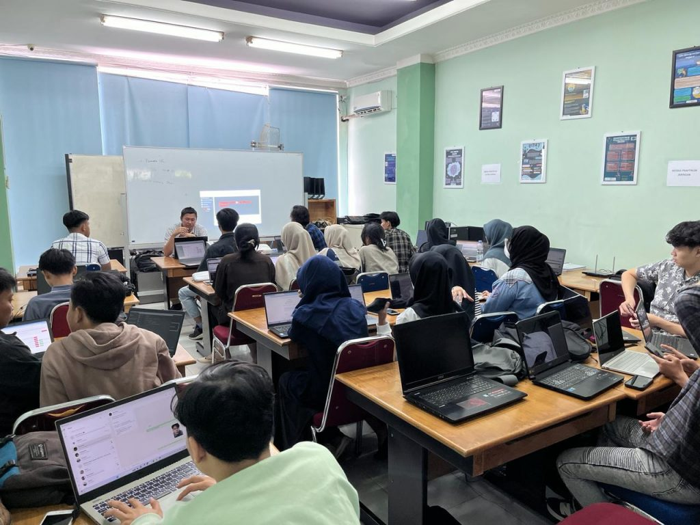
Kurikulum
Fondasi logika komputasi dan problem solving terstruktur.
Teknik pengelolaan data efisien untuk performa sistem optimal.
Implementasi AI untuk klasifikasi, prediksi, dan otomasi.
Pengembangan aplikasi web modern dari sisi frontend hingga backend.
Perancangan dan optimasi basis data relasional dan NoSQL.
Prinsip keamanan jaringan, aplikasi, dan perlindungan data.
Fasilitas
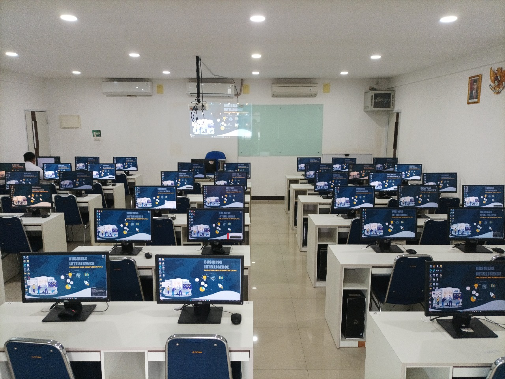
Perangkat terbaru untuk praktikum pemrograman intensif.
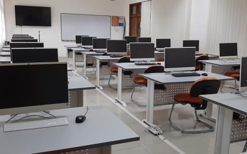
Infrastruktur komputasi untuk machine learning dan data analytics.
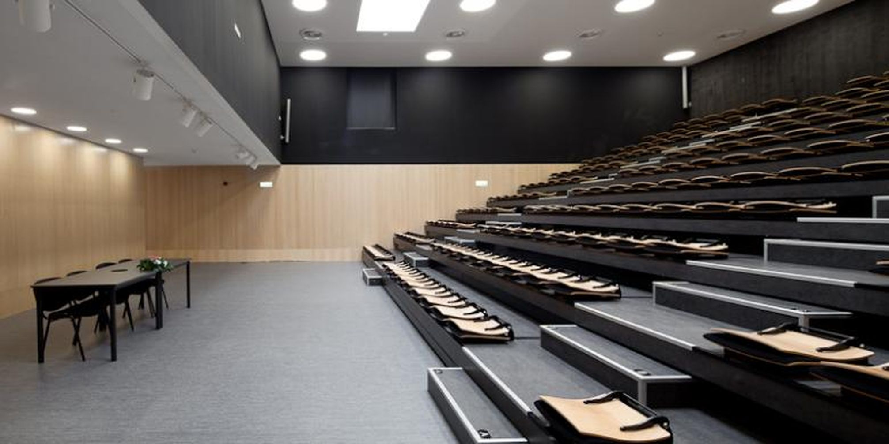
Area kolaboratif untuk brainstorming proyek dan presentasi tim.
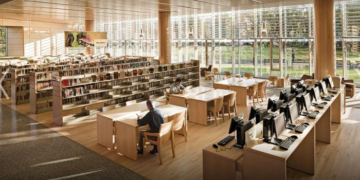
Akses jurnal, e-book, dan repositori riset 24/7.
Prospek Karir

Merancang, membangun, dan memelihara aplikasi agar stabil, aman, dan mudah dikembangkan.
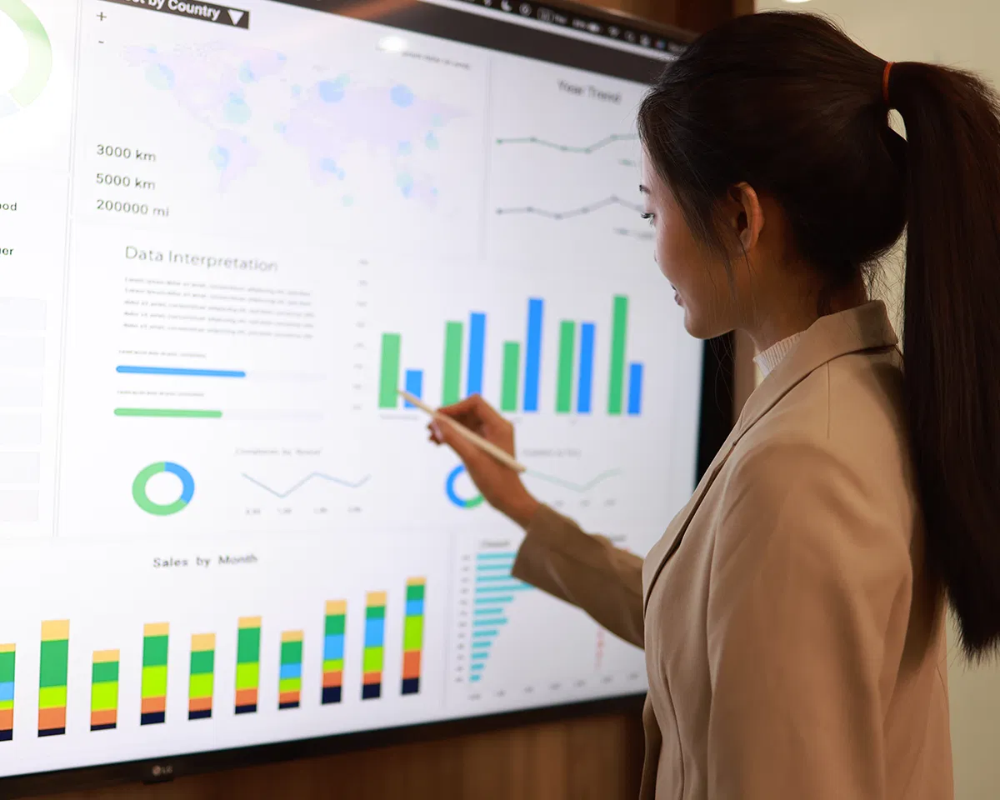
Mengolah data menjadi insight bisnis melalui statistik, machine learning, dan visualisasi.
Melindungi sistem dan jaringan dari ancaman siber melalui monitoring, analisis, dan mitigasi risiko.
Mendesain antarmuka dan pengalaman pengguna yang intuitif, menarik, dan berorientasi kebutuhan pengguna.
Mengembangkan solusi kecerdasan buatan untuk otomasi proses, analisis prediktif, dan inovasi produk digital.
Membangun dan mengelola infrastruktur cloud yang skalabel, andal, serta efisien untuk kebutuhan aplikasi modern.
Galeri Kegiatan
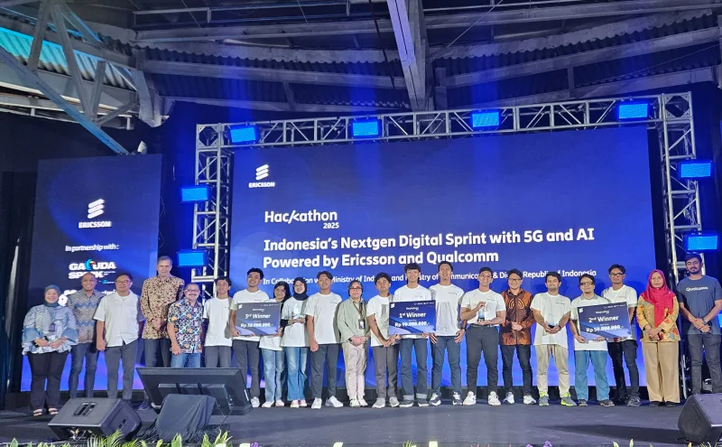
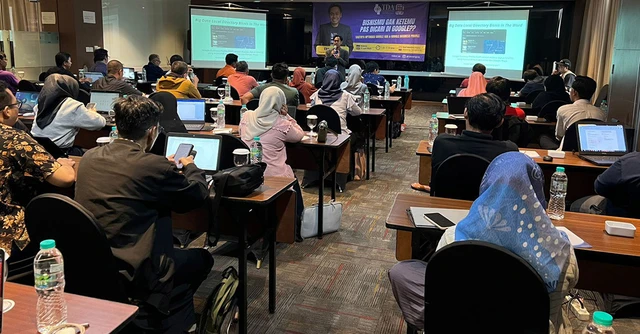
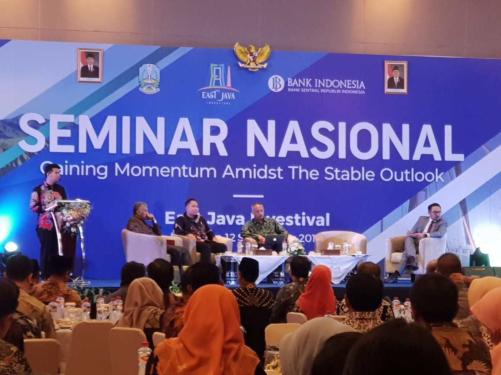

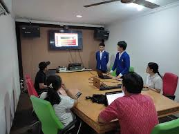
Dosen & Pengajar
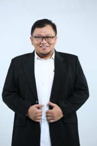
Ketua Program Studi Informatika
"Teruslah belajar dengan rasa ingin tahu yang tinggi, karena inovasi lahir dari keberanian mencoba dan konsistensi berproses."
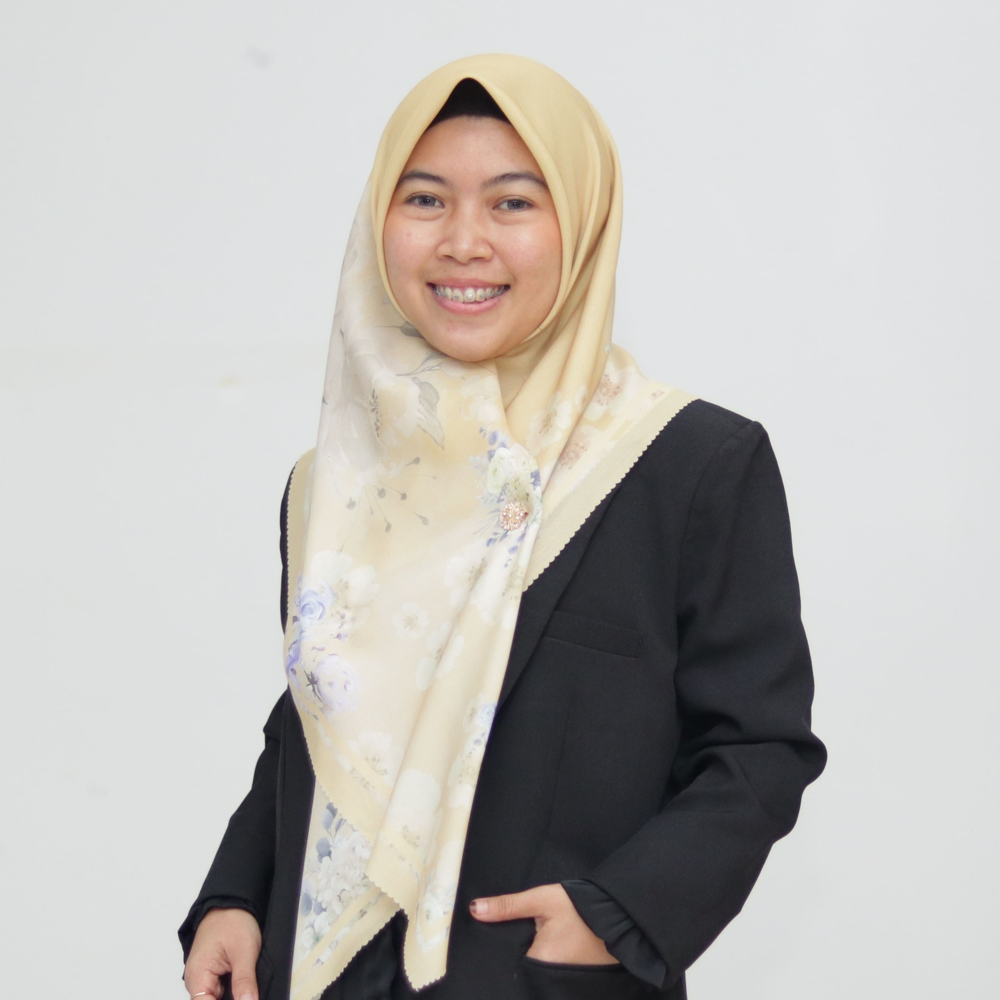
Koordinator Laboratorium AI
"Manfaatkan data dan teknologi AI secara etis untuk menciptakan solusi yang bermanfaat bagi masyarakat luas."
Guru Besar Rekayasa Perangkat Lunak
"Bangun fondasi algoritma dan logika yang kuat, karena itu akan menjadi bekal utama Anda menghadapi tantangan teknologi masa depan."
Daftarkan diri Anda sekarang dan mulai perjalanan menuju karir teknologi yang berdampak.
Daftar Sekarang